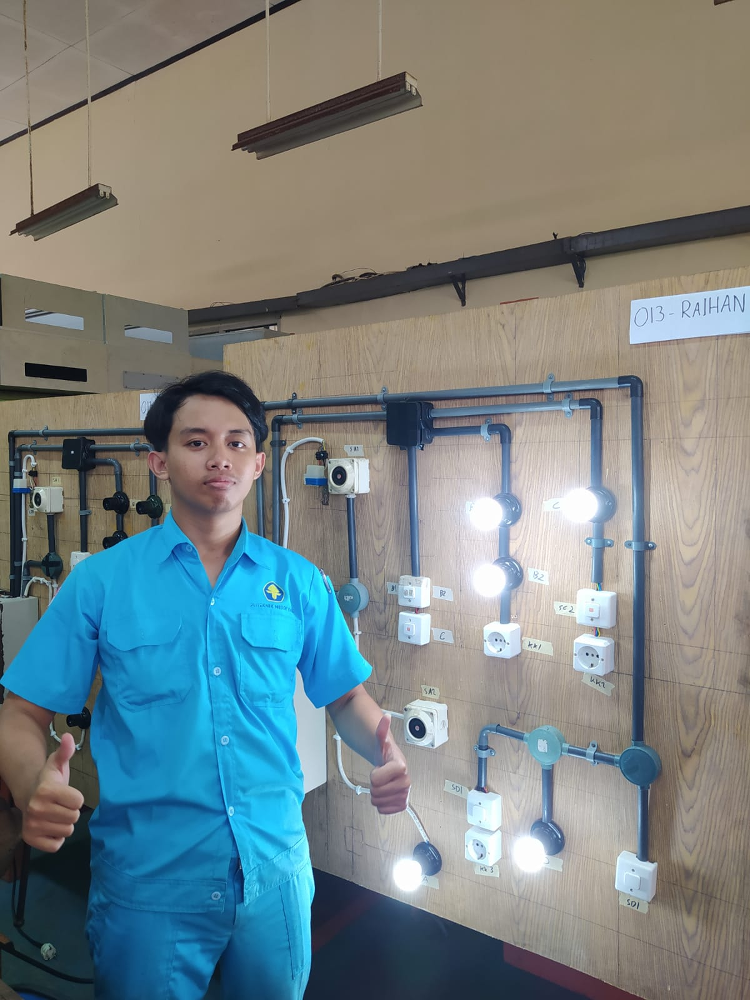
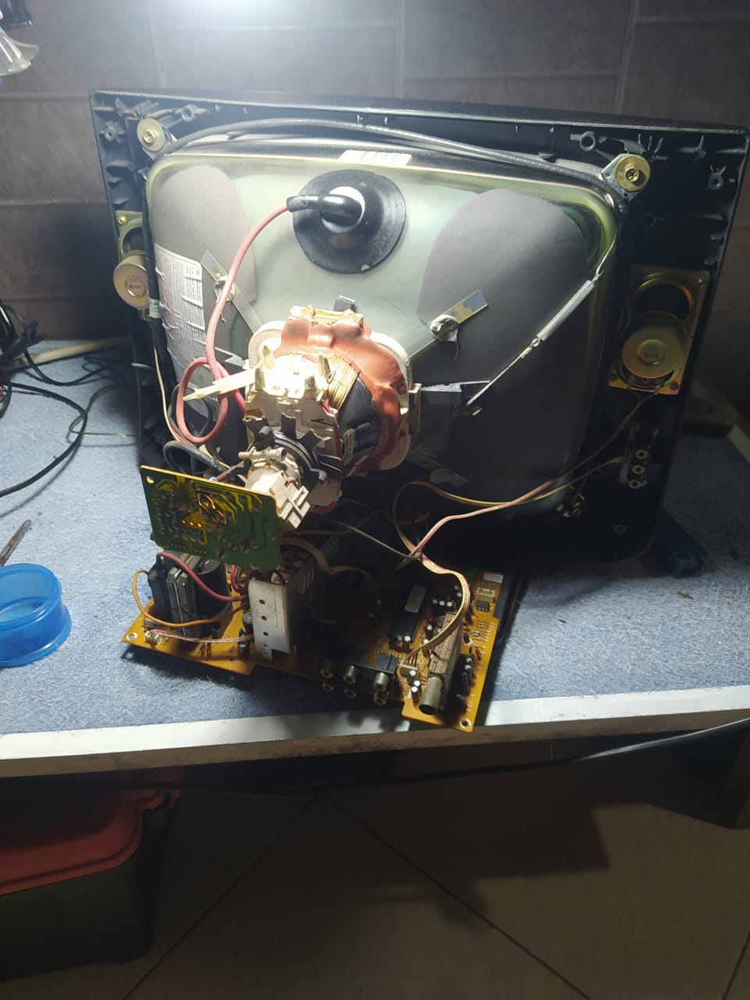
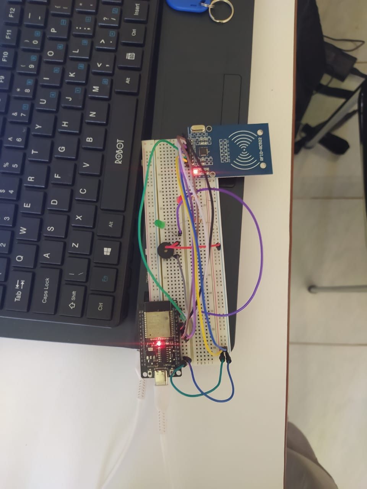
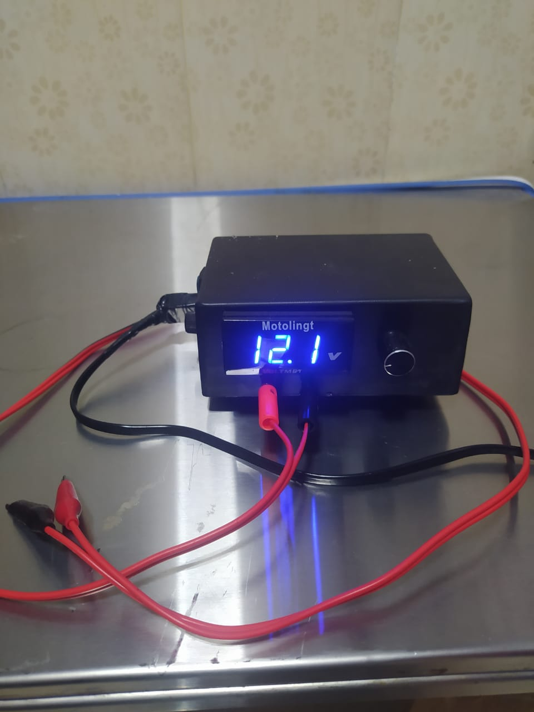
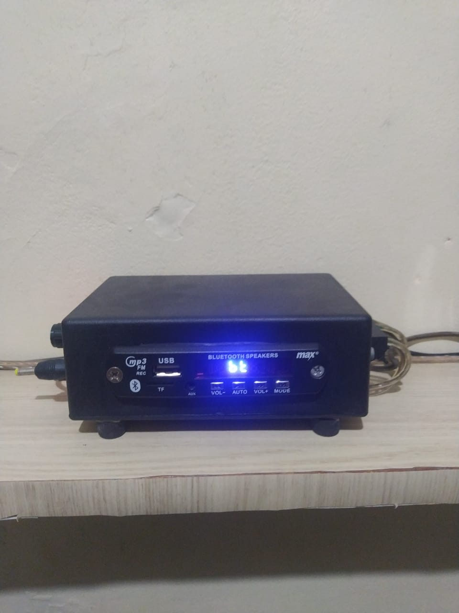

Tentang saya
Saya adalah mahasiswa Teknik Otomasi yang memiliki semangat tinggi dalam bidang teknologi dan perakitan sistem otomatis. Selama kuliah, saya telah mengikuti program PKL di Samsung Service Center dan Java Visual, yang memperkuat pemahaman saya dalam perbaikan, perakitan, dan troubleshooting alat elektronik. Sejak lama, saya memiliki hobi memperbaiki dan menciptakan perangkat sederhana — mulai dari memperbaiki alat rumah tangga, hingga membuat sistem otomatisasi berbasis mikrokontroler. Saya juga pernah terlibat langsung dalam proyek-proyek bersama ayah saya yang bekerja di bidang elevator dan eskalator, yang memberi saya pengalaman lapangan yang sangat berharga. Saya percaya bahwa kombinasi teori dan praktik adalah kunci untuk menjadi seorang teknisi dan inovator yang andal.
pengalaman
- PKL 1 (teknisi) — samsung service center
- PKL 2 (sales,instalasi,set up ,pick up) — java visual bali
- team support — PT.jaya kencana
Project

Instalasi listrik
project instalasi listrik rumah

Elektronika
Perbaikan dan pergantian komponen alat elektronik

Internet of things
Project membuka pintu otomatis menggunakan RFID.

Elektronik
membuat power supply

Elektronik
membuat amplifier